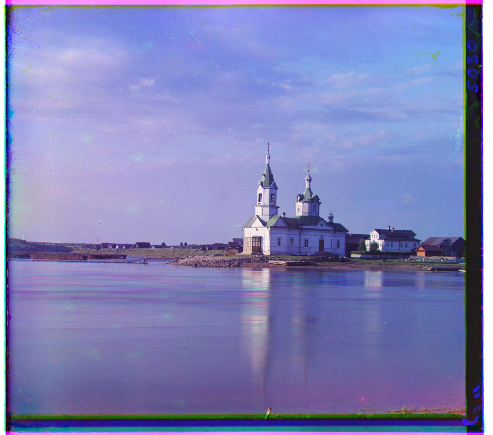
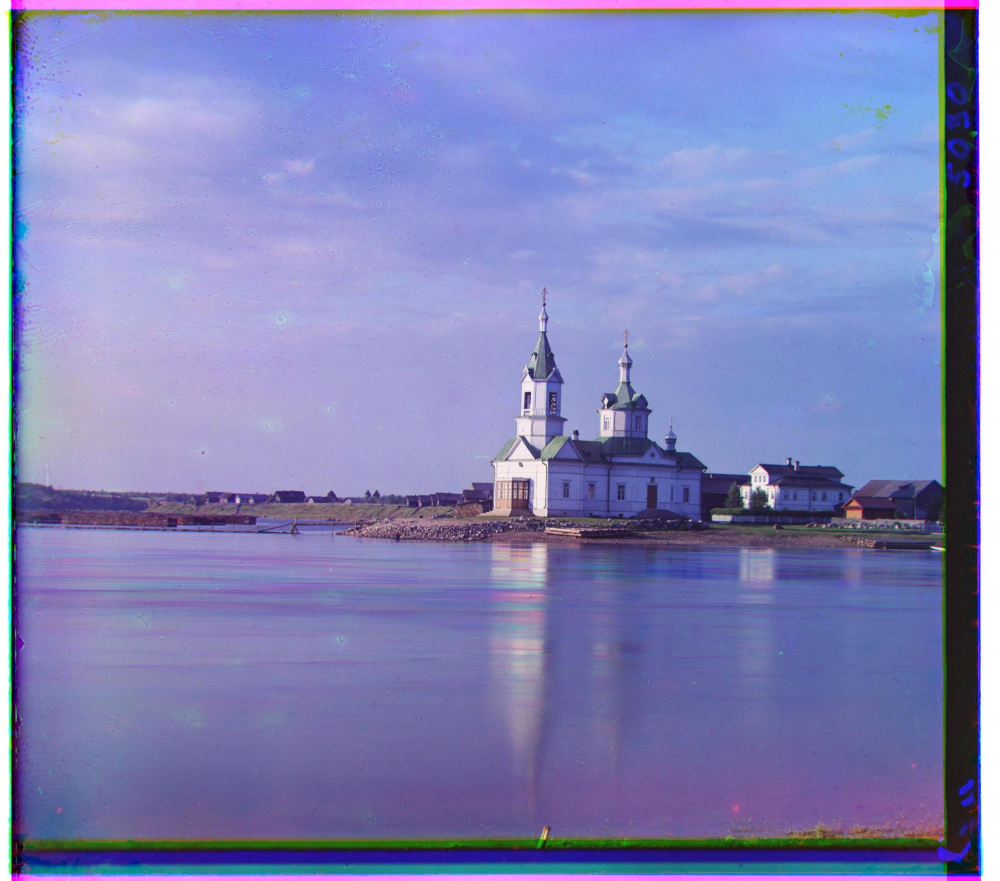

This project takes an image sheet containing the red, green, and blue parts of an image and combines them into one colored image. It does this by minimizing the L2 norm of the edges across different translations of the red and blue channels across the green reference. To speed this process up with larger images, a recursive coarse-to-fine pyramid speedup is utilized. This works by lowering the resolution several times and minimizing the L2 norm at each level, using the offset from lower levels to start. This speeds it up as it has significantly less comparisons at higher levels.
I ran into several problems throughout this project. The one that took the most debugging time was a simple if statement being flipped. In implementing coarse-to-fine pyramid speedup, I included a one-line if statement to dictate the search “radius”. Since I had it the wrong way around, my implementation only became slower as it was searching [-15, 15] on both axes at all the layers except the lowest. This meant it was doing the non-optimized work on top of all recursion. I spent hours attempting to fix this, using various other optimization methods and rereading my code over and over until I finally found it.
A much more interesting problem I ran into was not an uncommon one. Emir.tif just wouldn’t work right. I tried different scoring metrics and other things, but found that using Canny Edge Detection finally got it working.
Finally, I ran into some problems earlier on where some of the jpegs were looking good and others had what looked like one color offset by a lot. To fix this, I just switched the reference layer I was using from blue to red ending up at green.
Offsets used appear above the images they correspond to AS (dx, dy) with red first and then blue.
(6, 1) (3, -2) (33, -8) (-25, -4)
(57, 17) (-49, -23) (65, -3) (-64, -6)
(48, 5) (-38, -16) (64, -9) (-38, 13)
(96, 4) (-89, -10) (6, 1) (3, -2)
(56, 48) (-52, -24) (107, -16) (-33, 11)
(98, 8) (-77, -28) (59, -6) (-56, -11)
(4, 1) (-3, -2) (44, 30) (-48, -2)
From the Prokudin-Gorskii collection
(-12, 3) (20, -6) (83, 13) (-76, -19)
This image didn’t work with my final code. I’m not sure why it didn’t, as an earlier iteration of my program did give an accurate result, but I can’t remember what was changed
(3, 167) (-22, -23)
I implemented two ideas: using SSIM for the metric and using a Canny edge detector for preprocessing. Of the two, I implemented SSIM using only numpy operations and used skimage.feature.canny due to time constraints. There was a minor decrease in speed, but below are some of the biggest improvements in looks before and after the changes.
Lady has the lease improvement, and still looks imperfect with the changes, but you can still notice a subtle improvement between the two. For most other images there were very minor changes, only a few pixels in some direction.